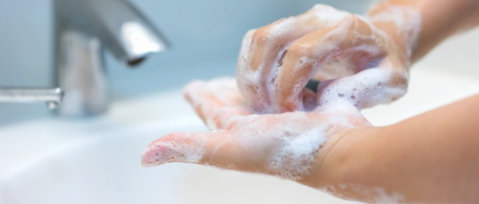

How to protect yourself & others
Important Ways to Slow the Spread:-
-
Wear a mask that covers your nose and mouth to help protect yourself and others.
-
Stay 6 feet apart from others who don’t live with you.
-
Get a COVID-19 vaccine when it is available to you.
-
Avoid crowds and poorly ventilated indoor spaces.
-
Wash your hands often with soap and water. Use hand sanitizer if soap and water aren’t available.
Cover coughs and sneezes
-
If you are wearing a mask: You can cough or sneeze into your mask. Put on a new, clean mask as soon as possible and wash your hands.
-
If you are not wearing a mask:
Always cover your mouth and nose with a tissue when you cough or sneeze, or use the inside of your elbow and do not spit.
Throw used tissues in the trash.
-
Immediately wash your hands with soap and water for at least 20 seconds. If soap and water are not readily available, clean your hands with a hand sanitizer that contains at least 60% alcohol.

Clean and disinfect
-
Clean high touch surfaces daily. This includes tables, doorknobs, light switches, countertops, handles, desks, phones, keyboards, toilets, faucets, and sinks.
-
If someone is sick or has tested positive for COVID-19, disinfect frequently touched surfaces. Use a household disinfectant product from EPA’s List N: Disinfectants for Coronavirus (COVID-19)external icon according to manufacturer’s labeled directions.
-
If surfaces are dirty, clean them using detergent or soap and water prior to disinfection.